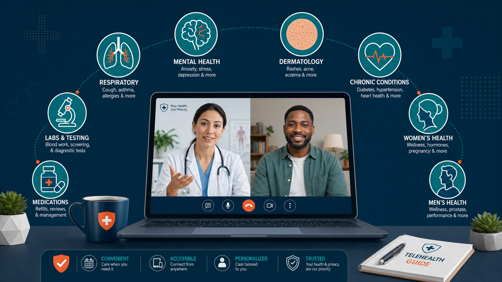
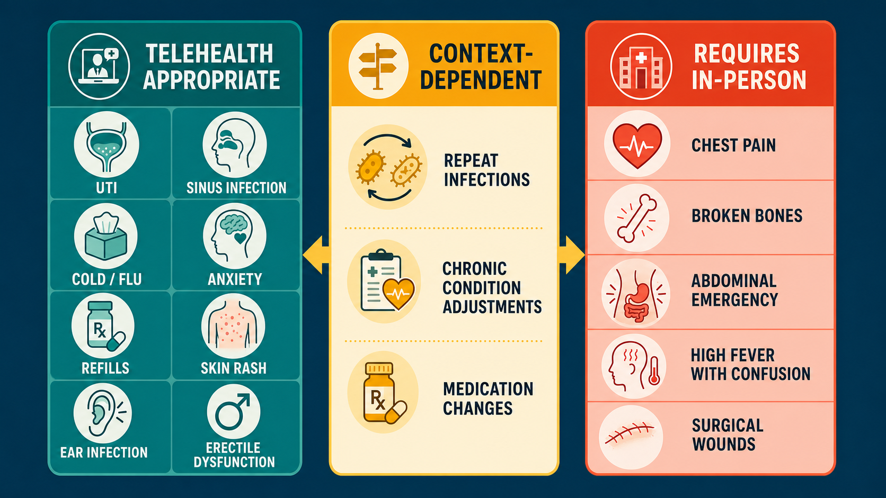

Key Takeaways
- A 2024 Johns Hopkins systematic review of 77 studies found telehealth outcomes are clinically comparable to in-person care across most conditions and specialties.[1]
- Telehealth reduced condition-related hospitalizations by 37 per 1,000 patients vs. usual care in a meta-analysis of 127 RCTs.[2]
- In UTI care, a real-world dataset of 51,474 telehealth visits found 89.7% 7-day symptom resolution and 94% adherence to IDSA antibiotic guidelines.[3]
- For mental health, a 2023 meta-analysis of 20 RCTs found no significant difference in treatment efficacy, patient satisfaction, or dropout rates between telepsychiatry and in-person psychiatric care.[4]
- DEA flexibilities currently allow Schedule II–V controlled substance prescribing via audio-video telehealth without a prior in-person visit, extended through December 31, 2026.[5]
- As of 2024, 71.4% of U.S. physicians reported using telehealth weekly — nearly triple the pre-pandemic rate of 25.1% in 2018.[6]

Introduction: What Telehealth Has Become in 2026
Telehealth is no longer a workaround for exceptional circumstances. It has become a standard mode of care delivery for a substantial share of U.S. physician visits — with 71.4% of physicians now using it weekly, nearly triple the pre-pandemic rate.[6] The question most patients still ask — "what can actually be treated online?" — deserves a serious, evidence-anchored answer rather than a marketing brochure.
This guide provides that answer. It surveys every condition category where telehealth has demonstrated clinical viability, links directly to each condition-specific pillar guide in this evidence-based library, and gives you the decision framework to know when virtual care is appropriate — and when it is not. The evidence base is real: systematic reviews, randomized controlled trials, large real-world datasets, and regulatory documents from HHS, the DEA, and the FDA. No claims beyond what the data supports.
What makes 2026 different from 2020 is depth. The early pandemic surge in telehealth was about access under emergency conditions. The current state is about demonstrated outcomes. Researchers now have multi-year datasets from tens of thousands of telehealth encounters, Cochrane reviews with over 22,000 participants, and specialty-level evidence from dermatology, psychiatry, urology, and chronic disease management. The picture that emerges is clear: for a well-defined set of conditions, virtual care delivers results on par with a clinic visit. For another set, it falls short — and that distinction matters.
Use this guide as your map. The framework below tells you which tier a given situation falls into. The category sections walk through the clinical rationale and link to specific guides. The red-flags section tells you when to bypass all of this and go directly to an emergency department or urgent care clinic. Both pathways matter equally — telehealth is one tool among several, not a universal replacement for the full range of care you need.
The Decision Framework: When Telehealth Works, When It Doesn't
Every clinical situation fits somewhere in a three-tier framework. Tier one conditions are those where a structured patient history and visual assessment — the two things telehealth does well — are sufficient to make a reliable diagnosis and prescribe effective treatment. Tier two conditions require judgment: they can often be managed virtually, but the clinical picture determines whether an in-person component is needed. Tier three conditions require physical examination, imaging, procedures, or monitoring that video cannot provide.
The determining factor is not the condition name but the specific clinical presentation. An ear infection in an adult who can describe the symptom onset and timeline is often manageable via telehealth; that same patient presenting with facial swelling, neck stiffness, or sudden hearing loss shifts immediately into tier three. A skin rash that has been photographed clearly by the patient in good lighting is approachable via video; the same rash presenting with fever, rapid spread, or suspected cellulitis over a joint needs in-person examination. Context determines tier, not category.
Research supports this tiered approach. An Epic analysis of over 35 million records found that for most telehealth visits across 33 specialties, there was no need for an in-person follow-up within 90 days — meaning the virtual visit resolved the clinical question for the large majority of appropriate presentations.[7] The AHRQ has also documented that well-designed telehealth workflows improve adherence to evidence-based guidelines and reduce missed-appointment rates — outcomes that support access without compromising safety.[8]
| Tier | Category | Key Criteria | Examples |
|---|---|---|---|
| Tier 1 — Telehealth Appropriate | Diagnosis by history + visual assessment | Clear symptom pattern; no fever, altered vitals, or systemic signs; no procedure required | UTI, sinus infection, cold sores, anxiety, acne, ED, birth control refill, chronic med refill |
| Tier 2 — Context-Dependent | Judgment call; presentation-specific | May need home monitoring data, prior lab results, or careful red-flag screening to proceed virtually | Hypertension (if home BP data available), eczema flares, gout, possible cellulitis, sore throat (strep vs. viral) |
| Tier 3 — Requires In-Person | Physical exam, procedures, or imaging required | High fever + systemic symptoms, emergency signs, joint aspiration needed, imaging-dependent diagnosis, surgical wound assessment | Chest pain, fracture, abdominal emergency, PE, pelvic exam, biopsy, anaphylaxis, altered mental status |
One structural limitation of telehealth deserves direct mention: a physician cannot auscultate your lungs, palpate your abdomen, or measure your blood pressure through a video screen. For conditions where those maneuvers change the diagnosis or management — think respiratory distress, peritoneal signs, or hypertensive urgency — in-person evaluation is required. The best telehealth physicians are honest about this boundary. They flag it, explain it, and route you to the appropriate level of care without delay.
Conditions by Category
The sections below cover every condition category with a detailed clinical guide in this library. Each section opens with the clinical framing — what the evidence says about virtual management in that category — followed by a card grid linking directly to each individual pillar guide.
Acute & Urgent Care
Acute care telehealth has one of the strongest real-world track records. Conditions in this category are often self-limiting or respond predictably to first-line treatment, and the diagnosis depends primarily on symptom history rather than physical findings. Studies consistently show that for low-acuity presentations — sore throat, ear infection, sinus infection, cold/flu, COVID-19 treatment initiation — virtual visits produce clinical outcomes comparable to in-person urgent care or retail clinic visits.
Animal bites (dog and cat), tick bites, mastitis, shingles, gout flares, and cellulitis each carry specific clinical nuances. A dog or cat bite that is low-risk, involving a superficial wound on a healthy adult, can be assessed via video and treated with appropriate prophylactic antibiotics. A bite over a joint, on the hand, or in an immunocompromised patient shifts to tier two or three. The same logic applies to cellulitis: mild, early-stage cellulitis on an extremity, visible and describable clearly, can often be managed with oral antibiotics. Rapidly spreading infection, blistering, or periorbital involvement requires an in-person or emergency evaluation.
Scabies, head lice, and poison ivy or oak contact dermatitis are pattern-recognition diagnoses — the clinical presentation is so characteristic that an accurate history combined with a photo or video assessment is usually sufficient. Dental pain is an important category to address honestly: telehealth can help with pain management and antibiotic coverage for suspected dental abscess, but it is not a substitute for dental evaluation and definitive treatment. Epinephrine auto-injector prescribing for patients with a prior anaphylaxis history is a clear telehealth use case — the physician evaluates the history, confirms appropriateness, and ensures the patient has a current device.
Skin Conditions
Dermatology is one of the most thoroughly studied telehealth specialties. Teledermatology has been practiced via store-and-forward photo review for over two decades, and the evidence on patient satisfaction is strong: 96% of patients in studied programs reported satisfaction with their experience.[9] For common inflammatory skin conditions — acne, eczema, rosacea, contact dermatitis, psoriasis — the diagnosis is largely visual and the treatment protocols are well-established, making telehealth a natural fit.
The key variable is image quality. A clear, well-lit photograph of the affected area taken in natural light gives a physician meaningful diagnostic information. Blurry, poorly lit images reduce diagnostic confidence. For this reason, many telehealth dermatology workflows ask patients to submit photos before or during the visit. Ring tinea (ringworm), tinea versicolor, dandruff/seborrheic dermatitis, cold sores, and contact dermatitis from poison ivy all have distinctive enough presentations to be reliably managed remotely. Pink eye — both the bacterial and viral forms — is another high-confidence telehealth diagnosis when the patient can clearly describe laterality, discharge character, and associated symptoms.
Skin cancer screening is the notable limitation. Teledermatology shows lower diagnostic accuracy for malignant lesions than in-person dermatoscopy. Any concerning mole, unexplained bleeding lesion, or rapidly changing skin lesion should be seen in person. That boundary is not a flaw in telehealth — it is responsible practice.
Respiratory Conditions
Respiratory conditions represent one of the original telehealth use cases. Cold and flu, COVID-19, sinus infections, and seasonal allergies are all pattern-recognition presentations — the symptom constellation is consistent enough that a physician conducting a careful structured history can arrive at the correct diagnosis and treatment plan without auscultating the lungs or swabbing a throat in person. A 2023 study on direct-to-consumer telemedicine demonstrated that, under rigorous antibiotic stewardship protocols, prescribing rates in virtual respiratory visits closely matched evidence-based guideline recommendations.[10]
Asthma management via telehealth occupies tier two. Stable asthma — reviewing controller inhaler technique, adjusting maintenance therapy, or renewing a prescription — is appropriate for virtual care. An acute asthma exacerbation with shortness of breath, falling oxygen saturation, or retractions is an emergency that belongs in the nearest urgent care or ED. The telehealth physician's job in that scenario is a 60-second assessment and a clear "call 911" instruction, not a full workup. Seasonal allergies are an almost uniformly appropriate telehealth condition: the history is reliable, the diagnosis straightforward, and the treatment options — antihistamines, nasal steroids, leukotriene antagonists — all prescribable remotely.
Urinary & Sexual Health
This category produces some of the most compelling evidence in all of telehealth medicine. The landmark PLOS ONE real-world study of 51,474 telemedicine UTI visits found 89.7% 7-day symptom resolution and 94% adherence to IDSA antibiotic prescribing guidelines — outcomes matching or exceeding in-person standard of care.[3] The diagnosis of uncomplicated UTI in healthy adult women is, by design, a clinical one: there is no single test result that establishes the diagnosis, and the history — burning, urgency, frequency, absence of fever and flank pain — is the primary diagnostic tool.
Bacterial vaginosis and vaginal yeast infections follow similar logic. Both have characteristic symptom patterns, and the decision to treat is generally based on history and symptom description rather than mandatory lab confirmation in otherwise healthy patients. Genital herpes management — both initial suppressive therapy and outbreak treatment — is well-suited to telehealth after the initial diagnosis is established. The same applies to ongoing chlamydia treatment following a positive test result, including results from at-home testing platforms.
Erectile dysfunction is one of telehealth's clearest success stories. The condition is defined by history, the first-line treatments (PDE5 inhibitors) have a well-established safety profile, and the standard clinical evaluation — history, contraindication screening, blood pressure check — translates directly to a video consultation. The key caveat is that new-onset ED in a patient without prior evaluation can be a signal of cardiovascular disease, diabetes, or hypogonadism, and a thorough physician will order appropriate labs before prescribing rather than issuing a prescription based on symptoms alone.
Mental Health & Lifestyle
Telepsychiatry is now among the most evidence-rich telehealth specialties. A 2023 meta-analysis of 20 RCTs — the most methodologically rigorous comparison to date — found no significant difference in treatment efficacy (SMD −0.01, P=.84), patient satisfaction, or treatment dropout rates between telepsychiatry and in-person psychiatric care.[4] For anxiety and depression, this evidence is particularly meaningful. The therapeutic relationship, the structured assessment, and the medication management conversation that form the core of a psychiatric visit all translate to a video format without meaningful loss of clinical quality.
Performance anxiety — the anticipatory anxiety that interferes with sexual function in otherwise healthy individuals — is a condition that many patients feel more comfortable discussing remotely than in a clinic waiting room. The same applies to smoking cessation counseling, where the telehealth format removes transportation barriers and makes it easier to schedule consistent follow-up visits. Research supports behavioral interventions delivered via telehealth as effective at improving cessation rates, with no evidence that the virtual format reduces therapeutic impact compared to in-person counseling programs.
Chronic Conditions & Medication Refills
Chronic disease management is where telehealth delivers some of its clearest systemic benefits. A Cochrane review of 93 randomized controlled trials (N=22,047) found that telehealth-delivered care reduced systolic blood pressure by 4.33 mmHg vs. usual care and improved glycemic control in diabetes patients.[11] A separate JMIR meta-analysis of 127 RCTs found that telehealth reduced condition-related hospitalizations by 37 per 1,000 patients — representing a 15.6% reduction compared to usual care.[2] These are not marginal findings. They suggest that consistent, accessible follow-up — which telehealth makes structurally easier — produces measurable improvements in hard clinical endpoints.
The key to chronic disease telehealth is patient-generated data. A hypertension visit conducted via telehealth is most useful when the patient arrives with a log of home blood pressure readings from the prior two to four weeks. A diabetes check-in works best when the physician can review home glucose data or a continuous glucose monitor readout. Hypothyroidism management — reviewing TSH values from recent labs and adjusting levothyroxine dosing — is almost entirely a data interpretation exercise that requires no physical examination. Migraine management, cholesterol follow-up, GERD treatment adjustment, and stable asthma or psoriasis reviews all follow similar patterns: the clinical work is history-taking, data review, and prescribing, all of which translate directly to a video format.
Men's & Women's Health
Several conditions that disproportionately affect men or women have strong telehealth profiles due to the combination of clear diagnostic criteria, established treatment protocols, and the sensitivity that makes patients prefer a private video conversation to a clinic waiting room. Male pattern hair loss (androgenetic alopecia) is among the most diagnosis-by-history conditions in medicine — the pattern, duration, and family history tell most of the clinical story, and treatment with finasteride or minoxidil can be initiated safely after appropriate contraindication screening.
Birth control management and refills represent a high-volume, high-appropriateness telehealth use case. Renewing an existing prescription, switching formulations due to side effects, or initiating contraception in a patient without contraindications requires a careful history but generally no pelvic examination — a point that current clinical guidelines, including those from major obstetric and gynecologic professional organizations, explicitly support. Vaginal dryness associated with menopause or perimenopause — a condition that affects quality of life significantly but often goes undertreated — is diagnosable by history and manageable with topical estrogen or non-hormonal options initiated via telehealth. GLP-1 weight loss medications have become a significant telehealth category, with the important caveat that appropriate prescribing requires a thorough evaluation of cardiovascular history, diabetes status, contraindications, and realistic treatment expectations — a conversation, not a prescription refill.
Specialty & Aesthetic
A growing number of specialty and aesthetic conditions are appropriate for telehealth when the clinical criteria for safety are met. Anti-aging topical treatments — retinoids, growth factors, peptide formulations — are prescribed based on skin assessment and patient history, both feasible via video. Bimatoprost for eyelash growth, originally developed as a glaucoma treatment, is prescribed via telehealth after a careful ophthalmic history to screen for contraindications (active eye conditions, recent eye surgery, contact lens use considerations).
Hyperhidrosis (excessive sweating) is a condition where telehealth often bridges a gap in care. Many patients with primary hyperhidrosis have spent years managing the condition without medical evaluation, unaware that prescription aluminum chloride solutions, glycopyrronium wipes, or referral for botulinum toxin treatment are all evidence-supported options. A telehealth visit is often the first time these patients receive a formal clinical assessment and treatment recommendation. Motion sickness management — both prescription scopolamine patches and oral anticholinergics — is a straightforward telehealth prescription appropriate for individuals with a clear use context (sea travel, flight, car travel) and without contraindications.
At-Home Testing Integration
At-home diagnostic testing is the bridge between telehealth and laboratory-grade confirmation. FDA-cleared OTC tests for COVID-19, influenza A/B, and RSV now allow patients to obtain rapid results at home, results that inform the telehealth physician's prescribing decision during the same visit. The Visby Medical PCR device — reviewed in detail in this library's at-home testing track — extends this capability to STI testing, providing lab-grade PCR results for chlamydia, gonorrhea, and trichomoniasis from a home sample collection kit.
The clinical value is straightforward: when a patient completes an at-home STI panel, connects to a telehealth visit, and shows a positive result during the conversation, the physician can prescribe treatment immediately. No waiting days for a lab result, no second appointment. Current evidence supports this workflow for conditions where the at-home test has validated sensitivity and specificity. The FDA OTC test clearance database is the authoritative reference for what tests meet that bar — and the list continues to expand.

The Evidence Base for Telehealth
The published literature on telehealth outcomes has matured significantly since the first wave of pandemic-era studies. Early research was limited by small sample sizes, short follow-up periods, and heterogeneous study designs. What exists now is a body of Cochrane reviews, prospective RCTs, large real-world datasets, and systematic reviews that allow reasonable conclusions about where virtual care performs — and where it falls short.
The Johns Hopkins systematic review — 77 studies comparing telehealth and in-person care across primary care, mental health, chronic disease, and specialty settings — found that "differences in clinical outcomes between in-person and telehealth care were generally small and not clinically meaningful."[1] That is a qualified but significant finding: not that telehealth is equivalent across all situations, but that for the presentations studied, the outcomes were indistinguishable. A JMIR meta-analysis of 127 RCTs added another important data point: telehealth reduced condition-related hospitalizations by 15.6% vs. usual care, with a mean reduction of 110 hospitalizations per 1,000 patients over the study period.[2]
Mental health stands out as the most consistently well-supported telehealth category. Fourteen separate meta-analyses and systematic reviews have now examined telepsychiatry vs. in-person psychiatric care. The most rigorous recent synthesis — 20 RCTs, 1,814 patients — found no difference in treatment efficacy (SMD −0.01), patient satisfaction, working alliance, or dropout rates.[4] This evidence is now strong enough that the AMA's CONNECT for Health Act of 2025 specifically proposes removing remaining in-person visit requirements for initiating telemental health care under Medicare.
| Condition Category | Evidence Base | Key Outcome vs. In-Person | Citation |
|---|---|---|---|
| General (all specialties) | 77 studies (Johns Hopkins SR) | Clinically comparable outcomes | [1] |
| Hospital utilization | 127 RCTs, N=34,423 | −37 condition-related hospitalizations per 1,000 patients | [2] |
| UTI (acute) | N=51,474 real-world visits | 89.7% symptom resolution; 94% IDSA guideline adherence | [3] |
| Mental health (anxiety/depression) | 20 RCTs, N=1,814 | Non-inferior (SMD −0.01, P=.84) | [4] |
| Hypertension | Cochrane 93 RCTs, N=22,047 | SBP −4.33 mmHg vs. usual care | [11] |
| Diabetes (glycemic control) | Cochrane 21 studies | Glucose improvement (MD 0.30%) | [11] |
| Chronic disease (quality of life) | 20 RCTs, N=4,153 | QoL improved (SMD 0.44, P=.002) | [12] |
| Dermatology | Multiple studies | High patient satisfaction; reduced wait times | [9] |
The equity and access literature adds another dimension. Research shows that telehealth reduces travel costs, improves specialist access in rural areas, and helps patients with mobility limitations engage with consistent follow-up — all access benefits that translate into better long-term outcomes.[13] The AHRQ has also noted that, when implemented with equity-aware workflows, telehealth can reduce missed-appointment rates and improve adherence to guideline-based care.[8]
Red Flags: Symptoms That Always Require In-Person Care
If you experience any of the symptoms below, go to the nearest emergency department or call 911. Do not book a video visit first.
| Body System | Red Flag Symptoms — Always Requires In-Person Evaluation |
|---|---|
| Cardiovascular | Chest pain or pressure, jaw or arm pain, sudden shortness of breath at rest, new irregular heartbeat, syncope (fainting) |
| Neurological | Sudden severe headache ("worst of my life"), facial drooping, arm weakness, slurred speech (stroke), sudden vision loss, altered mental status, seizure |
| Respiratory | Difficulty breathing at rest, oxygen saturation below 92%, respiratory rate above 30/min, stridor, cyanosis |
| Abdominal / GI | Severe abdominal pain (especially right lower quadrant), guarding or rigidity, bloody vomit, bloody stool with hemodynamic instability, signs of bowel obstruction |
| Infectious | High fever (above 103°F) with confusion or altered mental status, signs of sepsis (rapid heart rate, low blood pressure, mottled skin), periorbital or orbital cellulitis, rapidly spreading infection with blistering or necrosis |
| Musculoskeletal / Trauma | Suspected fracture, dislocation, spinal injury, severe wound requiring closure, significant head trauma, compartment syndrome symptoms |
| Urological / OB | Flank pain with high fever (pyelonephritis/urosepsis), pregnancy complications, postpartum hemorrhage, sudden testicular pain (torsion) |
| Psychiatric | Active suicidal ideation with plan or intent, active homicidal ideation, acute psychosis with safety risk, severe self-harm |
This list is not exhaustive. Any situation that feels like an emergency is an emergency. If you are uncertain whether your symptoms warrant a video visit or in-person care, default to in-person. The cost of an unnecessary urgent care visit is infinitely preferable to a delayed diagnosis in a true emergency.
What Telehealth Cannot Do
Telehealth has real structural limitations that responsible practitioners are transparent about. Understanding them helps you make informed decisions about your care.
Controlled substances beyond current flexibilities. The Ryan Haight Act of 2008 establishes that prescribing Schedule II–V controlled substances via telehealth ordinarily requires a prior in-person medical evaluation. The DEA's COVID-19 emergency flexibilities — currently extended through December 31, 2026 — allow audio-video telehealth prescribing of Schedule II–V medications without a prior in-person visit.[5] Permanent regulations are expected before that expiration. Schedule I substances (heroin, LSD, peyote) cannot be prescribed under any telehealth framework. Even within the current flexibilities, responsible prescribing of controlled substances via telehealth requires thorough clinical evaluation — the regulatory flexibility does not eliminate the clinical standard of care.
Procedures requiring physical presence. Joint injections, trigger point injections, colposcopy, biopsies, wound debridement, suturing, incision and drainage of abscesses, Pap smears, pelvic exams, male genital exams, and manual reduction of dislocations all require a clinician physically present with the patient. No video platform changes this.
Imaging-dependent diagnoses. Suspected fracture, pneumonia on chest X-ray, pulmonary embolism on CT, appendicitis on CT or ultrasound, kidney stone confirmed by imaging — these diagnoses require facility-based imaging that telehealth cannot provide. A telehealth physician can clinically suspect these diagnoses and direct you to the appropriate facility for confirmation, but the diagnosis itself is completed in person.
True emergencies. No telehealth platform should be used as a triage tool for emergencies. If you are experiencing a cardiac event, stroke, anaphylaxis, or severe trauma, call 911 or go to the nearest ED. A video call with a physician adds delay, not value, in an emergency.
How At-Home Testing Fits In
At-home diagnostic testing changes what is possible in a telehealth encounter. When a patient walks into a video visit with a positive at-home COVID test, an influenza A result, or a Visby Medical PCR panel showing chlamydia positive, the physician can act on that result immediately. The clinical conversation shifts from "we need a test to confirm this" to "the test is done — here is the treatment." That workflow compresses a multi-day diagnostic process into a single visit.
The FDA has cleared a growing number of OTC tests that support this model. COVID-19 antigen tests are the most familiar. Influenza A/B rapid tests are now widely available OTC. The Visby Medical PCR device brings lab-grade STI testing to the home setting, with sensitivity and specificity validated against clinic-based PCR. The FDA OTC test clearance database is the authoritative reference for what is available. As the at-home testing category expands, so does the scope of conditions that can be fully managed in a telehealth-plus-home-test workflow without a clinic visit.
See the full Visby Medical PCR STI Test Review for a detailed breakdown of at-home STI testing performance and clinical integration. Additional at-home testing reviews are in development.
Dual-Path Next Steps: Telehealth and In-Person
Understanding your options means knowing both paths equally well. Neither telehealth nor in-person care is categorically superior — the right choice depends on what you are dealing with, how severe it is, and what resources are available to you.
If telehealth is appropriate for your situation: A board-certified physician can evaluate your symptoms via secure video visit, prescribe medications electronically, and order labs if needed — often with same-day or next-day availability. Many direct-pay telehealth services bypass insurance entirely, removing prior-authorization delays for patients who want predictable, transparent visit pricing. For conditions in the tier-one and tier-two categories above, a telehealth visit is a clinically sound starting point.
If in-person evaluation is needed: Your options depend on urgency and the type of care required. Primary care physicians (PCPs) are best for non-urgent conditions requiring a physical examination or ongoing relationship. Urgent care centers are appropriate for same-day needs that don't require emergency resources — ear infections, minor lacerations, X-rays, rapid strep tests, and similar presentations. The emergency department is for true emergencies. Specialty clinics (dermatology, gynecology, urology, psychiatry) handle complex or procedure-dependent needs. Sexual health clinics and Planned Parenthood locations provide confidential STI testing, contraception, and related reproductive health services. Community health centers offer sliding-scale primary care for patients without insurance coverage.
Both paths are valid. The goal is the right care for your situation — not a default toward telehealth when in-person is more appropriate, and not an unnecessary trip to the ER when a video visit would resolve the issue. Use the decision framework above to orient yourself, and when in doubt, ask a physician rather than searching online for a definitive answer that depends on clinical judgment.
Frequently Asked Questions
Current evidence supports telehealth for many conditions — including urinary tract infections, sinus infections, anxiety, depression, acne, eczema, cold/flu, COVID-19, erectile dysfunction, birth control refills, hypertension, type 2 diabetes, hypothyroidism, migraine, cholesterol management, and more. The key factor is whether a diagnosis can be made reliably through a structured patient history and visual assessment, without requiring physical examination maneuvers, labs, or imaging not already available to the patient.
For most conditions appropriate to virtual care, yes. A 2024 systematic review of 77 studies found that differences in outcomes between telehealth and in-person care were "generally small and not clinically meaningful."[1] For mental health specifically, a 2023 meta-analysis of 20 RCTs found no significant difference in treatment efficacy, patient satisfaction, or dropout rates between telepsychiatry and in-person psychiatric care.[4] The critical qualifier is "appropriate conditions" — telehealth works where telehealth is indicated.
Under the Ryan Haight Act of 2008, prescribing Schedule II–V controlled substances via telehealth normally requires a prior in-person evaluation. However, DEA emergency flexibilities — extended through December 31, 2026 — currently allow Schedule II–V prescribing via audio-video telehealth without a prior in-person visit.[5] Permanent regulations are expected before that date. This does not apply to Schedule I substances, and regulatory flexibility does not eliminate the obligation for thorough clinical assessment before prescribing.
Seek in-person or emergency care for: chest pain or pressure, difficulty breathing at rest, sudden severe headache, stroke symptoms (facial drooping, arm weakness, speech difficulty), high fever with altered mental status, severe abdominal pain, signs of anaphylaxis, major trauma, or any symptom that has rapidly worsened over hours. These situations require physical examination, imaging, or interventions not possible via video.
Research supports telehealth for ongoing management of hypertension, type 2 diabetes, hypothyroidism, hyperlipidemia, and similar conditions. A Cochrane review of 93 trials found telehealth reduced systolic blood pressure by 4.33 mmHg vs. usual care and improved glucose control in diabetes.[11] Patients typically share home monitoring data — blood pressure readings, glucose logs, CGM data — during visits, and the physician adjusts medications or management plans accordingly. The results are best when patients arrive with consistent home data to review.
Coverage varies by plan and state. As of 2024, 25% of Medicare fee-for-service beneficiaries used at least one telehealth service.[6] Many commercial insurers cover telehealth at parity with in-person visits, particularly in states with telehealth parity laws. Direct-pay telehealth services are also widely available for patients who prefer to bypass insurance and pay a flat visit fee.
Yes. At-home testing increasingly fits into telehealth workflows. FDA-cleared OTC tests exist for COVID-19, influenza, and STIs. The Visby Medical PCR device provides lab-grade results at home for chlamydia, gonorrhea, and trichomoniasis — results that a telehealth physician can act on during the same video visit. Combining at-home testing with telehealth allows accurate, rapid diagnosis without an office visit for an expanding set of conditions.
Telehealth cannot perform physical procedures (joint injections, biopsies, pelvic exams, wound debridement), interpret imaging that requires in-house equipment (X-ray, MRI), manage true emergencies, or diagnose conditions that depend entirely on physical examination findings. Fractures, appendicitis, PE, and similar diagnoses require in-person evaluation and facility-based imaging. These are not gaps to paper over — they are the appropriate limits of a tool that works exceptionally well within its indicated scope.
Bottom Line
Telehealth in 2026 is not a workaround or a compromise. For a well-defined set of conditions, the evidence is clear: virtual care delivers clinical outcomes on par with in-person visits, with meaningful advantages in accessibility, cost, and consistency of follow-up. The data tells us this across UTI care, mental health treatment, chronic disease management, and acute care for low-acuity presentations.
The discipline is in knowing the boundary. The conditions surveyed in this guide — and detailed in each linked pillar guide — represent the set where telehealth belongs in the clinical workflow. The red flags and limitations sections define where it does not. A board-certified physician conducting a telehealth visit operates within those boundaries: treating what is appropriate to treat, and routing patients to the right level of in-person care when the clinical picture requires it. That is what evidence-based virtual medicine looks like in practice.
Use this guide as a starting point. The individual pillar guides go deeper on each condition — the clinical evidence, the specific treatment options, the decision criteria, and when to escalate. Together, they form a complete picture of what is possible when telehealth is applied thoughtfully, within its demonstrated scope, by physicians who understand both its power and its limits.
References
- Shaver J, et al. "Effectiveness of telehealth versus in-person care during the COVID-19 pandemic: A systematic review." Johns Hopkins University / AHRQ. 2024. pure.johnshopkins.edu
- Flodgren G, et al. "The effect of telehealth on hospital services use: Systematic review and meta-analysis of 127 RCTs." Journal of Medical Internet Research. 2021;23(9):e25195. jmir.org
- Daumeyer NM, et al. "Real-world evidence: Telemedicine for complicated cases of urinary tract infection." PLOS ONE. 2023;18(2):e0280386. pmc.ncbi.nlm.nih.gov
- Melin K, et al. "Psychiatric Treatment Conducted via Telemedicine Versus In-Person: Systematic Review and Meta-Analysis." JMIR Mental Health. 2023;10:e44790. mental.jmir.org
- McDermott Will & Emery. "DEA Further Extended Telemedicine Flexibilities for Controlled Substances Through 2026." November 2025. mcdermottlaw.com; California Telehealth Resource Center. "DEA Extend Telehealth Flexibilities Through 2026." caltrc.org
- American Medical Association. "New data details how telehealth use varies by physician specialty." AMA Policy Research Perspectives. December 2025. ama-assn.org
- American Hospital Association. "Fact Sheet: Telehealth." February 2025. aha.org
- AHRQ PSNet. "Telehealth and Patient Safety." December 2022. psnet.ahrq.gov
- HSE Library / American Telemedicine Association. "Telemedicine Chapter 7: Telemedicine and Dermatology." 2020. hselibrary.ie
- Antibiotic stewardship in direct-to-consumer telemedicine consultations. International Journal of Infectious Diseases. 2021. doi.org/10.1016/j.ijid.2021.02.020
- Flodgren G, et al. "Interactive telemedicine: effects on professional practice and healthcare outcomes." Cochrane Database of Systematic Reviews. 2015;9:CD002098. cochrane.org
- Wang X, et al. "Evaluation of the Effectiveness of Telehealth Chronic Disease Management." Journal of Medical Internet Research. 2023. PMC10176143. pmc.ncbi.nlm.nih.gov
- Dorsey ER, et al. "Telehealth Interventions and Outcomes Across Rural Communities." Journal of Medical Internet Research. 2021. PMC8430850. pmc.ncbi.nlm.nih.gov
- U.S. Department of Health and Human Services. "Telehealth Trends." HHS.gov. 2024. telehealth.hhs.gov
- Centers for Disease Control and Prevention / Community Preventive Services Task Force. "Telehealth Interventions to Improve Chronic Disease." CDC. 2024. cdc.gov
- American Psychiatric Association. "Online Prescribing of Controlled Substances — Ryan Haight Act Overview." Psychiatry.org. 2025. psychiatry.org
- Zimmerman M, et al. "Comparing efficacy of telehealth to in-person mental health care in intensive treatment." Journal of Psychiatric Research. 2021;144:84–91. PMC8595951. pmc.ncbi.nlm.nih.gov
- Hamadi H, et al. "Unlocking the Potential: Telehealth Services and Social Determinants of Health Outcomes." 2025. connectwithcare.org